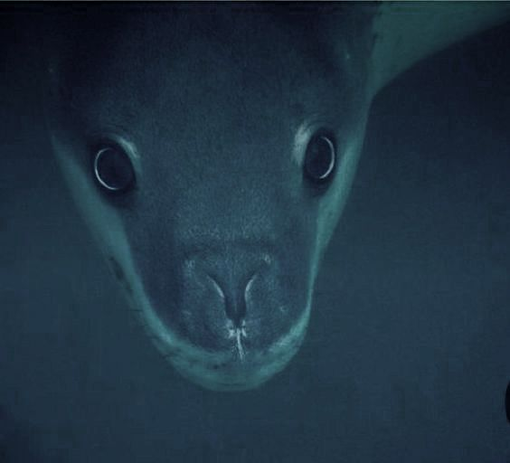
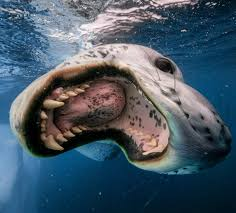
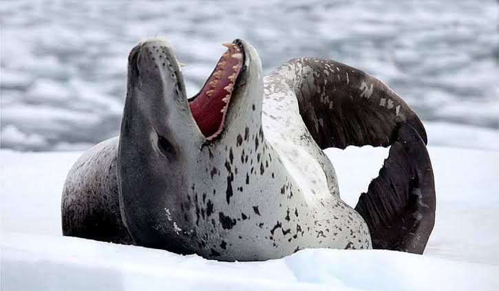
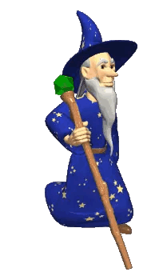

Leopardos marinhos, também conhecidos como foca-leopardo da familia dos focídios.
Seu nome científico é Hydrurga leptonyx. Hydrurga significa "trabalhador da água" ou "aquele que se move na água".
leptonyx significa "garra fina" ou "garra delgada".



Se quiser saber mais sobre leopardos marinhos acesse esse site: Clona.cartão.APK
